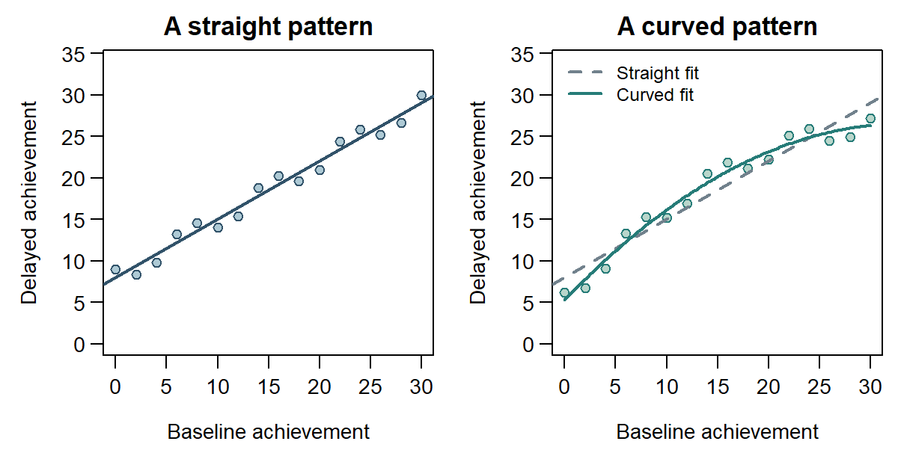
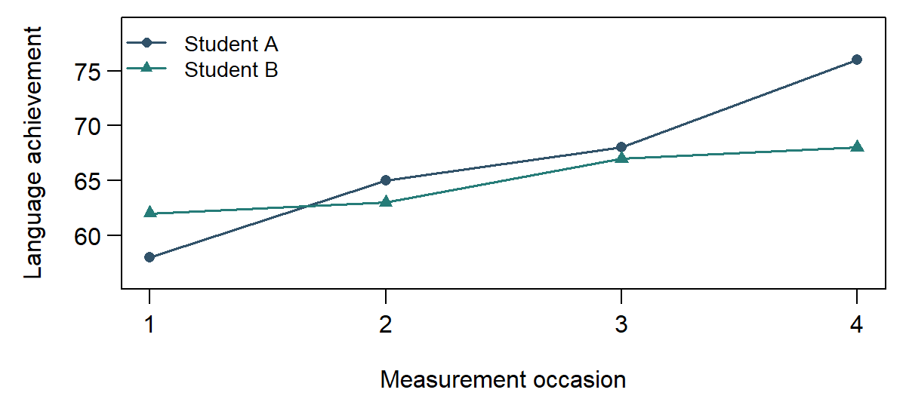
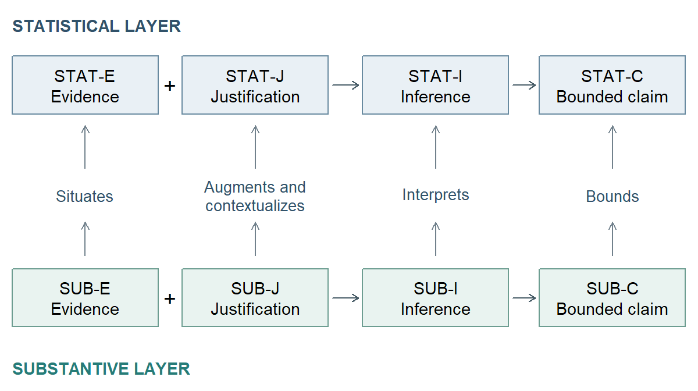

The Quantitative Research Journey
Contents
NoteChapter overview
This chapter follows the research journey from questions to data, research design, methods, and interpretation. Published studies of student outcomes and working from home, together with invented feedback, measurement, and language examples, make the ideas concrete. The feedback study then shows how these contributions form an argument. Reading and comprehending a study is the approach’s primary use; evaluating its quality is a separate secondary use that depends on that reading. A brief construction workflow offers auxiliary guidance for conducting research. Fuller documentary readings and coordinated studies are developed in Argument Chapters A and B. By the end of the chapter you will be able to frame a concern as a question with an estimand, identify the data and how they were produced, recognize a method family and the reasons for its use, distinguish an estimate from its uncertainty and interpretation, and follow the support to a bounded answer.
Five concerns give the methods in this chapter a purpose. A college wants to identify students who may need support. Teachers wonder whether a different feedback format would help students learn. An employer is considering working from home. A researcher wants to understand students’ confidence and sense of belonging. A language program wants to follow how its students progress over a year.
How can a concern become a quantitative question, and how do measurement, design, and statistical methods connect that question to an answer with stated bounds?
1 From a Substantive Problem to a Quantitative Question
Why do some students thrive while others struggle? What shapes a person’s decision to seek help? Does a change in working conditions improve performance? Curiosity about social and behavioral life often begins with questions like these. They are familiar enough to invite an immediate explanation, yet complex enough that several explanations may seem plausible. Personal experience can suggest a useful idea. Research gives us ways to examine that idea beyond the experiences that first brought it to mind.
Empirical research grounds knowledge in systematically obtained observations and experience. Researchers connect what they propose to what they can observe, then use those observations to develop, examine, or revise their account. An explanation about motivation, for example, needs some way of connecting that idea to students’ responses or behavior. Theory helps decide what would be informative; observation helps reveal where an expectation holds, where it changes, and what remains unresolved.
Quantitative research is one way of being empirical. It records observations numerically and uses statistical methods to study variation: differences across people, places, conditions, and time. The numbers might be amounts, scores, or counts of people in categories. Their value comes from what they represent and the comparisons they make possible. Qualitative research also uses empirical evidence; mixed-methods research brings quantitative and qualitative inquiry together. The methods developed here are quantitative.
A social or behavioral outcome usually varies for many reasons at once. Any statistical model selects some of those features and leaves others in the background. Parsimony is a useful modeling principle: seek a reasonably simple account that retains what matters for the question. A more elaborate model earns its complexity when it represents important differences or improves the intended inference. When we try to model the complexity of the world with parsimony, a familiar caution applies: as the statistician George Box put it, all models are wrong, but some are useful (Box, 1976, 1979). A model earns its place by what it helps us learn, rather than by reproducing every feature of the world.
Some questions go further than describing variation. They ask whether changing one thing would produce a change in another. Causal questions require support for that proposed comparison, beyond observing that two things vary together. They are one important kind of quantitative question, alongside questions about what is present, how variables are associated, and what can be predicted. The kind of answer wanted determines what the research needs to establish.
The five opening concerns each present a different research difficulty.
Student support: who might need help? A college wants to help students before difficulties accumulate. Prior grades, age, finances, course choices, and family circumstances may all matter. Students share courses and enter in different years, while their eventual outcomes become known much later. At enrollment, the college can act only on information available then. Which of those details could help it recognize a need for support?
Feedback: would a different format help? Teachers spend considerable time commenting on assignments, yet students repeat similar mistakes. Learning also depends on prior achievement, the teacher, and the class. Classmates share conditions, and students may respond differently to the same comments. Teachers choose formats for reasons that may themselves affect learning. How could a study distinguish what the feedback contributes?
Working from home: what changes? An employer wonders whether working from home helps or harms performance. Job responsibilities, tenure, home conditions, and commuting may matter, and performance changes from week to week. Employees who volunteer to work from home may differ from others. The arrangement could affect performance through several intervening changes. What comparison would help the employer understand its consequences?
Confidence and belonging: what do students feel? A college wants to know whether students feel able to handle their coursework and whether they feel part of the academic community. Neither feeling appears on a transcript, and students may describe similar experiences in different words. A student who is confident about the work can still feel out of place. How could a college find out what its students feel?
Language progress: what changes over a year, and for whom? A language program wants to know how students improve across a year. Progress may come quickly at first and then slow, and two students who finish at the same level may have arrived there very differently. Classmates also share a teacher and a timetable. What would show how learning unfolds and how students differ?
These complexities give statistical methods a purpose. Several simultaneous influences motivate comparisons that take more than one variable into account. Ideas such as confidence need observable indicators. Shared classrooms and repeated occasions call for attention to dependence. Self-selection makes design important, and intervening changes invite questions about pathways.
1.1 Questions, aims, theory, and hypotheses
Take the feedback concern: “Does a different kind of feedback improve students’ learning?” It is a useful starting point, but learning could mean performance on an immediate quiz, a delayed assessment, course completion, or confidence. Students could refer to one class or to a wider educational system. Improve could refer to a change observed over time or to an effect caused by the feedback. An answerable quantitative question names whom or what it concerns, the outcome, the comparison or relationship, and the kind of answer sought.
A topic identifies an area of interest, such as student support. An aim states what the study intends to accomplish: for example, to assess how well information available at enrollment predicts later recorded student outcomes. A research question expresses the uncertainty more directly: how well does a stated prediction rule perform for new students represented by these data? An aim can be sufficiently specific to supply a question even when a paper has no sentence ending with a question mark.
Substantive theory helps explain why the question matters and what might be expected. A theory of feedback might propose that explanations help students recognize errors and choose more effective practice. A substantive hypothesis could therefore predict better achievement under explanatory feedback than under the usual format. In the invented feedback study, classes in both conditions follow the same six-week program; the feedback format differs. That expectation also suggests possible measurements, such as practice time and the kinds of errors students make.
A statistical hypothesis states a proposition about a specified statistical quantity or model. For the feedback question, one proposition, the one a test usually assumes, is that the average assignment effect on the follow-up score is zero. That proposition is the null hypothesis. It is more precise, and narrower in scope, than the theory that feedback helps learning, and Section 4.4 shows how the evidence is examined for compatibility with it. A statistical test examines a proposition under stated conditions; the broader educational explanation needs additional support.
A result is a quantity produced by analysis, such as a mean, difference, interval, or prediction. A claim is a statement the researchers make after interpreting the result. These terms are related, but they are not interchangeable. The order of responsibility is:
- The question states the answer obligation.
- A hypothesis may record an expectation before the focal evidence is examined.
- Analysis produces one or more results.
- Reasoning connects those results to an eventual bounded answer, which may itself be inconclusive.
Descriptive and exploratory questions can be valuable without a directional hypothesis. When a hypothesis is present, its content and its timing are separate pieces of information. A hypothesis about a mean difference has the same statistical meaning whether formulated before data collection or suggested by a plot; its status as prospectively specified or exploratory differs. A transparent study preserves both.
1.2 Description, association, prediction, and causal effects
Consider four questions a college might ask. How are recorded student outcomes distributed? How is admission grade associated with those outcomes? How well does an enrollment-time prediction rule perform for other students? What would a feedback intervention change in achievement? Administrative records contribute to the first three; an intervention study can supply a designed comparison for the fourth. A common interest in student success gives these questions context, while their intended answers require different support.
These are descriptive, associational, predictive, and causal questions. Table 1 summarizes their different tasks. Its third column introduces the estimand: the quantity the study seeks to learn. The next subsection explains how to specify it.
For the feedback question, the causal effect is the contrast between the achievement outcomes that would occur under assignment to explanatory feedback and to the usual format for the same students. That contrast could be zero. Learning about it requires a comparison supported by the study design and its assumptions; Section 3.1 develops this reasoning.
| Mode | Beginner question form | Example estimand | Typical support question |
|---|---|---|---|
| Descriptive | What is present, how much is there, or how is it distributed? | A mean or proportion for a named group, place, and period | Are the cases and measurements suitable for what is being described? |
| Associational | How do measured variables differ or vary together? | A difference or relationship for named variables and cases | Does the comparison describe an association without implying causation? |
| Predictive | How well can an outcome be predicted for new cases, settings, or times? | A specified performance measure for a stated prediction rule in a defined population of new cases, settings, or times | Was prediction checked on suitable observations not used to fit the procedure? |
| Causal | What would differ under one intervention or exposure rather than another? | An average outcome contrast under two named alternatives | Do the design and assumptions permit the intended causal comparison? |
A descriptive answer may be exactly what a decision requires. Knowing which students are missing from a service can be more useful than fitting a complex model to those already attending. Likewise, a prediction can be useful without explaining why an outcome occurs, provided its performance and intended use are understood. The four modes describe different tasks rather than a ranking of research quality.
The word explain deserves attention. Explaining an observed admission-grade association may mean describing how recorded outcomes vary with that grade. Explaining a causal mechanism asks how changing something produces a change in an outcome. A regression equation can organize the first task without establishing the second.
Measurement and growth questions fit within this map. Describing the relationships among confidence indicators is an associational task; predicting later achievement from them is predictive. Describing an average achievement trajectory differs from asking whether a policy causes that trajectory to change. The subject matter and the intended claim work together to define the question.
1.3 The estimand and the eventual answer
An estimand is the target quantity: what the study seeks to learn for the named units, conditions, outcome, and scope. An estimate is the numerical value calculated from the available data. Put simply, the estimand is what you want to learn; the estimate is what the analysis produces as its numerical approximation (Lundberg et al., 2021).
For the student-outcomes question, an estimand could be a probability of recorded Dropout status at a specified admission grade and age. For feedback, it could be the average difference in follow-up achievement if the same eligible students’ classes were assigned explanatory feedback rather than the usual format. For prediction, it could be a stated rule’s average probability prediction error for new students represented by the source dataset: on average, how far the probabilities the rule assigns fall from what actually happened for students it has not seen. A predicted probability for one student is an output of that rule; its performance across new students is a different quantity. A later question about next year’s entrants adds a future-cohort scope that also needs evidence about stability over time.
These specifications carry information that an everyday question can leave implicit. A feedback-effect estimand needs the students of interest, the two assignments being compared, the assessment and its timing, and the way individual effects are averaged. An average that gives each student equal weight can differ from one that gives each school equal weight when school sizes vary. Both can be useful, but they answer different questions.
For a purely descriptive question about a complete, fixed dataset, the estimand may be its exact mean or proportion. Once those data are available, calculating that quantity leaves no sampling uncertainty about that particular dataset. Questions about recording errors, missing people, or a wider population can still remain. The word estimand identifies the quantity sought; it leaves the source and extent of uncertainty to be specified.
An estimand usually supplies the numerical focus of a question-answer pair. The question states what needs answering, and the reported claim supplies the study’s eventual answer. A readable question can remain short, with its full specification beside it. For the feedback study:
Question: What is the average effect of assigning explanatory feedback rather than the usual format on the eligible students’ follow-up achievement?
Specification: The students belong to 24 participating classes in 12 schools. Achievement is the score on a common 0–40 assessment two weeks after a six-week program. The comparison gives each of the 480 eligible students equal weight and concerns assignment of their class to a format, regardless of their individual attendance.
2 Producing Evidence: From People and Concepts to Data
Data are recorded information, and a dataset organizes that information for a study. It is already the product of several decisions. Someone defined eligibility, selected a source, administered an instrument, recorded a response, or applied a coding rule. Understanding those decisions makes the numbers informative.
Begin with information about one student in each case. The student-outcomes dataset combines admission information with an eventual administrative outcome, so its variables concern different times. The feedback dataset combines the student’s assigned class, format, and delayed assessment score. Understanding whom and what the data describe gives meaning to a count, average, or comparison.
This section follows how a study produces evidence: what it concerns, how measurements are made, how observations connect, and what becomes available for analysis. Chapter 2 takes the resulting dataset as its starting point. It develops the reading of records, layouts, variable forms, and codes, then establishes which observations support each calculation. Understanding the study gives meaning to the file; examining the file shows how those meanings are represented in the analysis.
2.1 Units, variables, and study scope
For the student-support concern, a real study provides a useful dataset. Realinho and colleagues studied dropout and academic success at a Portuguese polytechnic (Realinho et al., 2022). The released file contains 4,424 students: 1,421 with recorded Dropout status, 794 Enrolled, and 2,209 Graduate at the normal duration of their degree (Realinho et al., 2021). The study built machine-learning models to predict these outcomes. A simplified analysis here uses logistic regression, which we will describe in words before following its implications.
A case is the entity or measurement occasion described by the data; here each case is a student. A unit is the entity selected, assigned, measured, or analyzed in a particular operation. These operations may concern different entities. In the feedback study, whole classes receive an assignment, achievement is measured on students, and the analysis compares the class means under the two formats. Identifying the operation makes the unit clear. Measurement units such as points or minutes have a different role: they express the amount recorded, rather than identifying the entity studied. Section 2.3 uses these entities to explain the connections among their observations.
A population is the collection of units a question concerns. A sample is a set of units selected or observed from that collection. The scope depends on the question: the participating students may themselves be the population of interest for a narrowly specified assignment effect. A wider question about all students in the region would need an account of how the participants relate to that wider population.
A variable is a characteristic that can take different values across units or occasions. Admission grade, age at enrollment, course, and recorded student status are variables in the administrative file. Quantitative variables express amounts: time on task is a continuous measurement, while an approved-unit count or a whole-number score takes discrete values. Categorical variables identify groups. Course is nominal, with no intrinsic order; a low-to-high confidence rating is ordinal, with an order but no established equal spacing. A Dropout indicator is binary, with two categories. A numerical course code remains categorical because its number names a course rather than an amount. Chapter 2 develops these forms and their implications for calculations.
In the released student data, \(1{,}421/4{,}424\approx0.3212\), or 32.1203%, have recorded Dropout status. A Dropout-versus-other-status question combines the 794 Enrolled and 2,209 Graduate students as the other category, while keeping their distinct meanings. Recorded Dropout can include changing course or institution; it need not mean leaving higher education altogether (Realinho et al., 2021; Realinho et al., 2022).
Variables also have roles in a question. The outcome is what an analysis seeks to describe, compare, or predict; predictors help express its relationship with other information. In the simplified student-outcome analysis, recorded Dropout is the outcome to be predicted, while admission grade and age at enrollment are predictors. Achievement is an outcome when asking about feedback, but prior achievement can be a predictor when forecasting a later recorded outcome. The same kind of score can therefore serve different roles at different times or in different questions.
The prediction time also determines which information is available. First-semester results arrive too late for a prediction made at enrollment, however strongly they relate to the eventual outcome. They may be useful predictors when the question concerns a prediction made after that semester. The question specifies both what is to be predicted and when the prediction will be made.
The familiar labels response variable and dependent variable often refer to the outcome; explanatory variable and independent variable often refer to a predictor. In an experiment, a predictor may be deliberately assigned; in an observational study it may simply be measured. These role labels alone establish neither causation nor statistical independence. More specific labels, such as treatment or confounder, describe the variable’s role in the study’s design.
2.2 Measurement instruments, procedures, and meaning
In an invented measurement study, researchers want to study learning confidence: students’ confidence in understanding course material and dealing with unfamiliar problems. They collect three continuously scored indicators, each from 0 to 100: confidence in explaining an idea, applying it to a new problem, and checking a solution. They also collect three indicators of belonging: feeling accepted, included, and able to participate in the academic community. Confidence concerns one’s ability to handle learning tasks; belonging concerns one’s place in that community. Each has its own proposed meaning and indicators.
The substantive ideas are constructs: concepts defined through knowledge of the domain. The recorded responses are observed variables, and the observed variables chosen to represent a construct are its indicators. An instrument links them through questions, tasks, instructions, response scales, and scoring procedures. The data are more informative when these details are available: a response given immediately after a difficult test may have a different meaning from one given at the beginning of a semester.
A researcher might average the three confidence indicators to form a composite score. For example, one student’s responses of 60, 80, and 70 give an average of \((60+80+70)/3=70\). The three responses are observed indicator values; their average is a calculated score. Another researcher might use a factor model to represent their relationships through a latent variable, a variable specified within the model rather than directly observed. The construct guides the choice and interpretation of indicators; the latent variable supplies a particular statistical representation of their shared variation. A score estimated from this factor model depends on the model and scoring method. The construct, the latent variable, and a calculated score are related, but each has a different role. Some studies use observed measures or composites without specifying a latent variable.
To see why the distinction matters, imagine that all three indicators respond strongly to test anxiety. Their scores could move together even if they cover only a narrow part of learning confidence. Factor analysis can describe their statistical relationship. Theory, item content, response processes, and other evidence help explain what that relationship means. A suitable statistical model and a convincing substantive interpretation contribute different kinds of support.
Measurement also involves reliability and validity. Reliability concerns the consistency or precision of scores under specified conditions. Validity concerns the support for proposed interpretations and uses of those scores. Consistent scoring is valuable, while the meaning of a score still depends on what the instrument measures and how it is used (American Educational Research Association et al., 2014).
For the feedback study, a common scoring guide helps make scores comparable across formats. An assessment blueprint connecting tasks to the taught material gives reasons for interpreting those scores as course-topic achievement. Extending them to creativity or lifelong learning would require additional evidence. The instrument and procedure tell us how observations were produced; the reasons for their interpretation become important when explaining why an interpretation is supported. Chapter 2 uses this account of measurement when interpreting recorded scales and codes and choosing suitable numerical descriptions.
2.3 Data structure: how observations are connected
Once we have identified the units and measurements, we can ask how their observations connect. A cross-sectional view describes units for a particular occasion or period. Longitudinal data follow the same units over time; panel data commonly organize that follow-up into successive waves. Following the same students supports description of individual change. Repeated cross-sectional observations instead describe a population at successive times without necessarily following the same people, so changes in the population can involve different individuals.
An invented language-learning study follows students across four equally spaced assessments. Student A scores 58, 65, 68, and 76; Student B scores 62, 63, 67, and 68. Their successive gains are 7, 3, and 8 points, and 1, 4, and 1 point. Across three intervals, average changes are \((76-58)/3=6\) and \((68-62)/3=2\) points. Equal time spacing thus accompanies uneven progress. Keeping the sequences reveals differences that a single average for each student would hide.
Repeated measurements can also concern conditions within one session, such as the same students completing tasks under two sets of instructions. The observations share a person even when the question concerns conditions rather than change over a year. Administrative fields collected at different times can describe a student’s history; studying a growth trajectory additionally requires repeated measurements of the outcome on a common scale and their occasions.
A long arrangement records one student at one occasion per row, with the score and relevant identifiers. Student and occasion identifiers connect that student’s repeated observations; classroom and school identifiers show group membership. Chapter 2 develops record counts and equivalent long and wide layouts.
Students sharing a classroom experience some common teaching conditions; classrooms can in turn share a school. This is a hierarchical arrangement: occasions within students, students within classrooms, and classrooms within schools. Sharing people or groups creates clustering. These features can coexist: the language study is longitudinal and clustered. Section 3.3 considers what those connections mean for comparisons, information, and uncertainty.
2.4 Implementation, exclusions, and missing observations
A record of feedback assignment tells us which format a class was offered. Attendance and delivery records tell us what students and teachers actually did. Both can matter. An assignment-effect question follows students according to the assigned format; a question about attending every session asks something different, because attendance may depend on motivation, health, or difficulty with the material.
Similarly, a student-support study needs to establish who appears in its file. Consider an invented alternative to the released student data: an administrative extract contains only students still enrolled at year end. That file can describe year-end enrollees. Studying withdrawal requires the entering cohort and information about who left, including students absent from the year-end file. A missing score for an included student and a person omitted from the dataset are different problems for understanding the data.
The analysis sample is the set of cases or observations used in a particular analysis. Eligibility, participation, available measurements, and exclusions can make this set differ from the observations originally sought or collected. It may also differ across outcomes or methods. A student with a recorded baseline score but no follow-up score supplies baseline information, for example, but cannot supply an observed before–after change. Following the study from entry through assessment to analysis explains how the available evidence took shape.
Reading the collection and preparation account helps establish who entered the study and analysis and which observations became available. A data codebook records variable meanings, units, and codes. Chapter 2 develops its practical use alongside missing values, preparation decisions, and the denominator for each calculation.
3 Research Design and Assumptions: What Supports an Inference?
An achievement difference of 2.5 points can arise in several kinds of study. Classes might have been randomly assigned to two formats. Teachers might have chosen whether to adopt explanatory feedback. Or one class might have improved by 2.5 points between a pretest and a posttest. The numerical difference alone leaves the interpretation open.
Research design connects the question to a plan for producing an informative comparison. Reading that plan means identifying both what was done and why the study treats it as support for its inference.
3.1 Causal comparisons and study designs
A causal question compares what would happen under different conditions. For one student, imagine the follow-up score if the class were assigned explanatory feedback and the score if it were assigned the usual format. Only one is observed. The other is the counterfactual outcome: the outcome under the alternative condition. The causal effect compares the outcomes under these two specified conditions for the same student. An average causal effect makes that comparison for the named units or target population; it can be zero. The counterfactual is an outcome, whereas the effect is a contrast between outcomes. Because each student’s two condition-specific outcomes cannot both be observed, the design and its assumptions must supply a defensible comparison.
An experiment deliberately assigns conditions; a randomized experiment uses a specified probability mechanism for that allocation. The mechanism gives the comparison a known basis, such as the random draw allocating classes to the two formats in the feedback study. Chance imbalances can still occur in the realized groups. Section 3.2 explains how the actual allocation design supports the causal comparison and how this differs from selecting participants.
In an observational study, the investigator records conditions or exposures without assigning the focal intervention or exposure. Suppose better-resourced teachers are more likely to adopt explanatory feedback, and their resources also improve achievement. The observed difference then mixes the feedback format with other relevant differences. Confounding occurs when a comparison mixes the exposure’s effect with effects of other factors that influence both exposure and outcome. A mediator instead lies along a proposed pathway through which the exposure affects the outcome. Measuring and adjusting for common causes can help, under conditions that need to be stated and supported.
A quasi-experimental study uses a design-based comparison around an intervention or exposure without randomized allocation. For example, a clearly enforced eligibility threshold might supply a useful comparison between otherwise similar units close to that threshold. Its causal interpretation depends on how that rule operates and the assumptions around the comparison. Voluntary adoption alone describes a selection process; a credible quasi-experimental argument needs more than that label (Shadish et al., 2002).
Three considerations help organize causal reasoning: an association or contrast in outcomes, the appropriate temporal order, and support for addressing alternative explanations. Confounding is one such explanation. Reverse direction is another: an outcome or its earlier development may influence the exposure, reversing the proposed direction of influence. For example, earlier achievement difficulties might prompt a teacher to adopt a new feedback format, so a relationship between format and achievement would need an account of that sequence. Maturation, concurrent curriculum changes, changes in measurement, selective follow-up, and influence between classes can also matter. These considerations work together rather than acting as three boxes whose completion automatically establishes causality.
3.2 Sampling, assignment, and self-selection
Sampling or recruitment concerns how units enter a study, through probability selection, volunteering, or availability. Assignment concerns the conditions allocated to participating units. The condition assigned and the treatment actually received can differ: a class assigned explanatory feedback might receive only part of the planned program. Study entry, allocation, and receipt therefore identify different parts of how the evidence was produced.
Random sampling, also called probability sampling, selects units through a probability mechanism that gives every eligible unit in a defined population or sampling frame a known, nonzero chance of selection. Those chances need not be equal. Here a frame identifies the units from which selection is made; Chapter 2 develops this idea and compares sampling schemes. The phrase random selection alone can describe other chance-based decisions, so identifying what is selected and for what purpose makes its meaning clear. Probability sampling supplies a basis for population inference under the selection design, contributing to generalizability or external validity: support for extending findings to other people or settings.
Random assignment uses a specified probability mechanism to allocate conditions among participating units. The assigned units may be individuals or groups. This mechanism contributes to internal validity: support for a causal interpretation of the comparison within the study. A study may use either, both, or neither form of randomization. Each contribution depends on implementation and analysis; population selection and causal allocation answer different questions (Shadish et al., 2002).
The causal justification follows the actual assignment design. Chance allocation supplies a known basis for comparison; the realized groups can still differ in prior characteristics. The analysis must respect the allocation mechanism and consider any later selection into the available outcomes.
In the invented feedback study, 12 schools volunteer, each contributing two classes with 20 eligible students per class. A random allocation assigns 12 of the 24 classes to explanatory feedback and the remaining 12 to the usual format. Assignment therefore concerns classes, while the outcome is measured on students. Comparing equally weighted class means also gives students equal weight because class sizes are equal. The comparison concerns these participating students. A claim about other schools needs further support concerning recruitment, curriculum, resources, and implementation.
The working-from-home concern was examined in a real experiment by Bloom and colleagues at Ctrip, a Chinese travel company. Employees first volunteered and met eligibility conditions; 249 were then randomly assigned, 131 to home work and 118 to office work. Home assignment meant four days at home and one in the office each week over nine months (Bloom et al., 2015, p. 169 and Appendix Table A.2). These employees chose to enter the experiment; the allocation procedure then determined their assigned working arrangement.
Self-selection occurs when people’s choices influence participation, exposure, or continued involvement. At the sampling or recruitment stage, volunteering chiefly raises a question about generalizability. For example, volunteers’ home circumstances might make home work more beneficial for them than for other employees. Random allocation among volunteers can still support their treatment comparison; extending that effect requires additional evidence. Self-selection names a process, rather than proving that every estimate is biased.
At the assignment or exposure stage, imagine instead that employees choose home or office work. If prior managerial support influences both their choice and performance, it is a confounder. Random assignment addresses this source of systematic difference; a voluntary-choice comparison needs other support for its causal interpretation.
Selection bias concerns systematic distortion relative to the declared estimand arising from which people or observations enter the comparison or analysis. Terminology varies: treatment-choice confounding is sometimes called selection bias; identifying the mechanism is more informative than the label alone. Recruitment chiefly raises external validity concerns, while allocation chiefly raises internal validity concerns. The distinction is a guide, not an exclusive division: selective loss of outcomes after allocation can also undermine a randomized comparison (Hernán & Robins, 2020).
Responses should match that mechanism. Suitable sampling, recruitment, and follow-up, together with information about nonparticipants or losses, help establish whom the findings can describe. Adjustment or weighting can support a broader inference under explicit assumptions about selection and relevant measured differences. For treatment comparisons, regression adjustment, matching, or weighting may address measured common causes; unmeasured confounding requires additional support. More elaborate designs include regression discontinuity, comparing units near an assignment threshold, and difference-in-differences, comparing changes across groups under assumptions about their untreated trends (Hernán & Robins, 2020; Shadish et al., 2002).
An instrumental variable changes treatment take-up, as a lottery offer might do in an invented program. Its use requires support for independence from other outcome determinants and an effect on the outcome only through treatment. Further assumptions determine the identified effect, often for people whose take-up the offer changes. This supports a particular causal comparison without establishing volunteer representativeness (Angrist et al., 1996).
Other variable roles become visible in invented extensions of the working-from-home setting. If home work reduced commuting stress, which then affected performance, stress would be a proposed mediator, or intervening process. A baseline characteristic would be a moderator if the effect varied across its values. If both job satisfaction and health affected participation in a follow-up survey, participation would be a collider, a common consequence of the two. Restricting the analysis to survey participants can create an association between satisfaction and health even if none existed beforehand. The restriction is a form of conditioning: considering the relationship among people who share a value of another variable, here participation. The pattern can arise from who participated rather than a relationship in the full employee group (Hernán & Robins, 2020). These examples illustrate roles; they are not pathways established by the original working-from-home study.
A variable’s timing and role help determine whether adjusting for it clarifies the intended comparison or changes or biases it.
3.3 Timing, comparisons, and dependence
The units identified in Section 2.1 and the connections among observations in Section 2.3 help us understand what a comparison can establish. A between-subjects comparison contrasts different people or groups; a within-subjects comparison uses repeated observations of the same people across occasions or conditions. Both kinds of comparison can occur in experimental, quasi-experimental, and observational studies.
Return to the language-learning scores measured four times during a year. Measurements from the same student share a history. Students within a school also share some conditions. These connections can create dependence, affecting the information supplied by the data. Four scores from one student answer questions about that student’s trajectory, while four students measured once provide information about differences between students. The same number of measurements can support quite different questions.
Timing helps establish the order of an exposure and an outcome. Repeated measurements can also contribute to a causal question. A feedback rollout observed in intervention and comparison classes before and after implementation helps reveal pre-existing differences and changes over time. Its causal interpretation still needs reasons that the comparison describes what would have happened without the rollout. A new teaching policy introduced only in the intervention classes, for example, could provide another explanation for their change.
Combining groups and time phases creates a richer design. Read its allocation, comparison conditions, timing, and dependence together. Such combinations make experimental design a substantial field of study in its own right.
The level of a relationship matters too. A change within a language learner differs from a difference between learners’ average scores. Comparing classroom averages introduces another level. Each can answer a useful question, provided the units and comparison remain clear.
Design also affects the uncertainty of an estimate. Many measurements of the same students or classes cannot automatically replace information from more units. Reading a study’s account of allocation, measurement, and dependence helps explain how informative its comparison can be. Chapter 3 develops precision, power, and their roles in planning.
3.4 Reasons for analytical choices and the assumptions they invoke
A method is usually selected through several connected considerations: the question and estimand, the outcome’s scale, the structure of the data, the design, and the intended use of the result. A numerical score alone points to no unique procedure. Comparing two independently assigned groups, describing repeated scores, and predicting a new student’s score give that score different analytical roles.
An assumption is a condition invoked in the reasoning. A straight-line baseline-to-delayed-achievement model represents a constant slope over its stated range. A procedure for independent observations requires an account of what makes that independence plausible. A growth model instead represents dependence among repeated measurements. A causal interpretation of observational adoption of explanatory feedback needs reasons for addressing confounding and for comparing sufficiently similar classes.
Several familiar names identify statistical conditions. Linearity describes the form of a modeled relationship; independence concerns connections among observations or errors. Normality may concern a model’s conditional errors, the parts of an outcome the model does not account for, or an approximation used by the procedure that produces the estimate, rather than every recorded variable. I.i.d. means independent and identically distributed. Repeated observations or shared classroom conditions often call for a representation of their dependence instead. These conditions belong to particular methods and inferences; the task is to recognize which ones the study actually invokes.
Causality is an interpretation of a comparison, supported by design and causal identification assumptions, such as a defensible account of confounding. Assuming normally distributed errors or specifying a straight line supplies no causal interpretation by itself. Statistical assumptions and causal support answer related but distinct questions.
Substantive reasons accompany these statistical ones. The choice of a follow-up assessment depends on what it represents; a proposed mediation path depends on a plausible sequence of events; interpretation of a confidence factor depends on the indicators and the setting. Statistical and substantive knowledge therefore contribute from the beginning.
Notice the distinction between identifying a reason and judging its adequacy. A report might state that it used a straight-line model because the baseline-to-delayed-score plot appeared approximately linear. That sentence documents the offered rationale. Whether the plot and other checks sufficiently support the choice is a further question. We return to this distinction when reading and evaluating the argument.
Table 2 compares the randomized feedback study with two invented redesigns. Each arrangement names its own causal question, students, outcome period, and intended estimand.
| Research design | Research question | Intended estimand | Possible confounding and other threats |
|---|---|---|---|
| Experimental: 24 classes randomly allocated between two formats | What would assigning explanatory feedback rather than the usual format change in delayed achievement for the eligible students? | Average assignment effect on the common delayed score for eligible students in participating classes | Random assignment addresses systematic allocation by prior achievement or teacher resources. Chance imbalance remains possible; loss of students and influence between classes are additional threats. |
| Quasi-experimental: designated rollout classes and comparable not-yet-treated classes, with baseline information | What would delayed achievement in rollout classes have been under explanatory rather than usual feedback? | Average effect of replacing usual with explanatory feedback for eligible students in rollout classes at the stated follow-up | Prior achievement, teacher resources, and reasons for rollout timing may affect adoption and outcomes. The rollout rule and comparison need to support the counterfactual. |
| Repeated measurement within a quasi-experimental design: intervention and comparison classes at several pre- and post-rollout occasions | What effect did explanatory feedback have on average achievement during the named post-rollout period for eligible students in rollout classes? | Average effect on scores in that period for those students, relative to continuing usual feedback | Different pre-existing trends, group-specific maturation, or concurrent teaching changes can distort the comparison. Repeated measurements help examine these possibilities. |
Repeated measurement is a feature that can accompany different assignment designs, which is why the last design also names a quasi-experimental arrangement. A one-group before-and-after dataset can describe change; attributing that change to feedback requires further support for the unobserved alternative. An adjusted association or an average pre-post change can be an estimand in its own right, under its own question. Keeping the intended estimand distinct from an available comparison helps the reader understand what the analysis is trying to establish.
4 Statistical Methods, Models, and Analysis
Statistical analysis connects data to questions through summaries, relationships, estimates, and uncertainty. Method names help readers recognize what an analysis learns.
4.1 A question-led map of method families
Descriptive statistics summarize observed data through means, proportions, measures of variation, and plots. A mean can describe the delayed achievement of a class; a proportion can describe what share of students have recorded Dropout status. Variation shows how much the observations differ around such summaries. Plots make patterns visible, including features a single number might conceal.
Read Table 3 by connecting each question, method family, and estimated quantity. Each entry maps the possible questions within a case rather than a single question-answer pair. Held-out data are set aside while a rule is developed. The surrounding explanation identifies the data and comparison; the second table develops their connection to design.
| Familiar case and question | Related method families | What the analysis estimates |
|---|---|---|
| Student outcomes: How does the chance of recorded dropout relate to admission grade and age, and how well can enrollment-time information predict the outcome for other students? | Proportions and descriptive summaries; binary regression within generalized linear models (GLMs); prediction checked on held-out data | A proportion in each recorded status; a conditional probability of recorded dropout; the average error of a fixed prediction rule for new students represented by the dataset |
| Feedback: What is the average effect of assigning explanatory feedback rather than the usual format on delayed achievement? | Mean comparisons, analysis of variance (ANOVA), and regression with a format indicator | The student-average achievement contrast under the two assignments in the named classes and period |
| Working from home: What did assignment to home work change in performance, and might the effect differ across employees or work through an intervening change? | Group comparison and regression with repeated outcomes; moderation and mediation as previews | The average assignment effect on a named performance outcome over the experiment; a difference in effects across a baseline characteristic; a proposed indirect effect, which needs its own support |
| Confidence and belonging: What do several indicators have in common, and how are the two constructs related? | Exploratory and confirmatory factor analysis (EFA, CFA) and structural equation modeling (SEM) | Indicator-factor relationships (loadings); correlations or modeled relationships between factors (factor correlations or structural coefficients) |
| Language progress: How does achievement change over four occasions, and how do trajectories differ among students who share classrooms? | Linear mixed-effects models (LMM) and longitudinal models; latent growth as a related representation | An average rate of change and between-student variation in trajectories for a stated model and time scale |
For student outcomes, first describe the proportions recorded as Dropout, Enrolled, and Graduate. A two-way frequency table could count these statuses within each course; dividing by the number of students in that course gives its outcome proportions. Binary regression can then express the probability of dropout given admission grade and age. This is a conditional probability because it refers to specified predictor values. A prediction assessment checks those probabilities on held-out students. Look for the outcome definition and the distinction between fitting a rule and assessing it on other students’ data.
For feedback, mean comparisons estimate the average difference under the two assigned formats. Analysis of variance (ANOVA) relates variation between group means to variation within groups. A grouping factor is a categorical variable defining groups; the two formats are levels of one factor. One-way and two-way ANOVA use one and two grouping factors, respectively, each of which can have several levels.
In the feedback study, class means represent outcomes under the two assigned formats. The analysis accounts for class allocation when estimating the difference and its uncertainty. The 480 student scores supply measurements from 24 assigned units. Regression can express the format comparison while retaining that design and the intended student weighting.
For working from home, regression can compare performance under the two assignments while accounting for repeated measurements from each employee. Many weekly measurements represent repeated observations of the same people, rather than that many independent employees. A report may present an average performance difference and a plot of how the groups compare over time. Further analyses could ask whether the effect varies across employees or works through an intervening change. Identify the performance outcome, period, and employees each result concerns, and whether a proposed pathway belongs to the original study or an invented extension.
For confidence and belonging, the measurements are several indicators intended to represent two substantive ideas. EFA explores how their shared variation might be represented by fewer latent variables; CFA examines a specified representation. Here a factor is a latent variable, distinct from the categorical grouping factor in ANOVA. A loading describes an indicator’s relationship with a factor, and a factor correlation describes how two factors vary together. SEM can also express relationships between factors through structural coefficients, each a modeled relationship between one factor and another (Bollen, 1989). Figure 4 in the appendix pictures the six indicators and two proposed factors. These outputs become interpretable alongside the item content, scoring, and intended construct definitions. A report should let you recognize both what the indicators measure and what the proposed model says about their relationships.
For language progress, repeated assessments reveal starting levels and change within students. An LMM can represent an average trajectory while allowing students to differ around it, including when they share classrooms or schools (Bates et al., 2015). The mixed-effects results might describe average improvement per assessment interval and variation in students’ starting scores or rates of improvement. Latent growth is an alternative representation of the same trajectories within a factor model of the kind just described. In a report, identify the time scale and distinguish an average trajectory from the individual patterns contributing to it. A rising group average can coexist with students who improve quickly, slowly, or very little.
The second table connects each case’s data and design to the method families.
| Familiar case and data | Research design and structure | Related method families | What connects them |
|---|---|---|---|
| Student outcomes: admission information and three recorded outcome categories | Observational administrative data; each case is a student, with variables measured at different times | Binary regression within GLMs; predictive modeling | Define the outcome and the prediction time; use predictors available then; assess performance on held-out data |
| Feedback: delayed achievement and assigned format | Random allocation of 24 classes to two formats | Group comparisons, ANOVA, and regression | Match the mean contrast, uncertainty, and weighting to class assignment |
| Working from home: assigned location and repeated employee outcomes | Individual randomization among eligible volunteers; repeated measurements | Comparisons and regression; longitudinal or LMM extensions | Represent assignment and dependence; added pathway questions need their own support |
| Confidence and belonging: multiple indicator scores | Observational measurement study; a separate dataset for examining a proposed representation | EFA, CFA, and SEM | Represent shared variation; connect measurement and structural relationships to construct meaning |
| Language progress: repeated scores from students sharing classrooms or schools | Longitudinal and hierarchical data; experimental or observational depending on allocation | LMM and multilevel models; latent growth | Represent within-person dependence, grouping, and variation in trajectories |
These connections are many-to-many. Regression can serve association, prediction, or a design-supported causal comparison. Repeated binary outcomes combine an outcome-scale question with a dependence question. Method choice therefore connects the estimand, measurements, design, and assumptions. “Mixed effects” in an LMM names statistical effects, distinct from quantitative-qualitative mixed-methods research.
4.2 Regression as a connecting language
Consider delayed achievement plotted against baseline achievement in a small invented feedback dataset. Each point represents two scores for one student: the baseline score gives its horizontal position, and the delayed score gives its vertical position. A fitted line summarizes how delayed scores tend to differ across baseline scores. Students with the same baseline score can still have different delayed outcomes; the line describes a pattern around which individual scores vary.
The line’s intercept is the fitted delayed score at baseline zero. Its slope is the fitted difference in delayed score for each additional baseline point. A residual is an observed delayed score minus its fitted value. A point above the line has a positive residual; a point below it has a negative residual. Residuals make the gaps between the summary and the individual observations visible.
The data in Figure 1 are separate from the 480-student experimental dataset. Both panels have the same average delayed score and the same fitted straight line:
\[ \widehat{Y}=8+0.7x. \]
Here \(x\) is baseline achievement and \(\widehat{Y}\), read “Y-hat,” is fitted delayed achievement, both in assessment points. The intercept is 8 and the slope is 0.7. At baseline 20, the fitted score is \(8+0.7(20)=22\). The left-panel student with an observed score of 21 is one point below that fitted value, so its residual is \(-1\) point. The slope describes an association between the two scores; it does not by itself describe what an intervention raising baseline achievement would do.
The right-hand pattern flattens as baseline achievement increases, although its mean and fitted line match the left-hand example. Reading the graph alongside the summary reveals the difference. Section 4.5 returns to this curve as an example of model modification.
Regression also connects to the feedback group comparison. Code usual feedback as 0 and explanatory feedback as 1, and a model can express the difference between their means. Adding baseline achievement allows the analysis to describe how delayed scores relate to both starting achievement and format. An interaction allows the baseline relationship itself to differ by format, rather than requiring the same slope in both groups. In the class-randomized experiment, the analysis still needs to respect class assignment and the intended student weighting (Gelman et al., 2020).
In an invented working-from-home extension, moderation asks whether the assignment effect varies with baseline commuting time, while mediation asks whether fewer interruptions help account for an effect on performance. The proposed pathway needs additional evidence and assumptions because randomizing work location also leaves other influences on interruptions and performance to be considered.
The language-learning data add change over time. Student A’s scores are 58, 65, 68, and 76 across four equally spaced occasions; Student B’s are 62, 63, 67, and 68. Their mean rises from 60 at the first assessment to 72 at the last, but their starting levels and patterns differ. Student A’s successive gains are 7, 3, and 8 points; Student B’s are 1, 4, and 1. The total gains of 18 and 6 points correspond to average changes of 6 and 2 points per interval. Those averages summarize the whole period, while the observed changes vary from one interval to the next.

An LMM can represent an average trajectory together with differences among students and occasion-to-occasion variation. Even a model with a straight average trajectory allows observed scores to depart from that line. If students share classrooms, the model can also represent relevant grouping. An average rate of improvement and differences among students answer related but distinct questions. The two trajectories in Figure 2 show why both matter; data from more students are needed to estimate the proposed student and classroom variation.
4.3 Model building and estimation
Model specification means deciding what statistical relationship to represent: the outcome, its predictors, the form of their relationship, and any dependence among observations. For the fitted line above, delayed achievement is the outcome, baseline achievement is the predictor, and the chosen form is straight. This choice represents the same fitted increase per baseline point throughout the range being described. A curve would allow that increase to change.
Adding feedback format changes what the model represents. A common baseline slope describes the same baseline-to-delayed relationship in both formats while allowing their fitted levels to differ. Allowing format-specific slopes gives a more flexible description. These choices should follow the question and the patterns the analysis seeks to represent. The average assignment effect remains a different quantity from the association between baseline and delayed scores, even when both are examined using the same students’ data.
A model and an estimation method do different work. The model states the proposed relationship and its conditions. The estimation method uses the observations to find numerical values for its unknown quantities. Least squares, for example, chooses the fitted line that minimizes the sum of squared residuals. Squaring prevents positive and negative residuals from canceling each other and gives larger gaps more weight. The resulting line makes those squared gaps as small as possible overall; it need not pass through every observation.
Software performs the specified calculations. R, the computational tool used throughout this series, can fit the line, calculate fitted values, and produce the graph. “Analyzed in R” identifies the software. The equation, data description, and analytical explanation identify the model, estimation method, and uncertainty procedure it implemented.
The generalized linear model (GLM) family extends regression to describe different kinds of outcomes, including a probability or an expected count (Nelder & Wedderburn, 1972). The recorded-dropout question concerns a probability, which stays between zero and one. Logistic regression is a commonly used member of this family for a two-category outcome; it is the rule used here for recorded dropout and reported in the appendix. A question about calls handled during a defined work period concerns a count. The model should represent that outcome appropriately, and the reported result should name its scale. A count model is one possible analysis of call counts, rather than a description of every analysis in the working-from-home paper.
For the student-outcome analysis, keep three quantities distinguishable. A student’s recorded status is an observation. The proportion with dropout status summarizes a collection of observations. A fitted probability describes the model’s estimated chance of recorded dropout given its predictors. Students recorded as Enrolled remain distinct from graduates, even though the binary question combines both as outcomes other than dropout. That coding answers the defined dropout question without predicting eventual graduation for enrolled students.
4.4 Statistical uncertainty, hypothesis testing, and model comparison
An estimate summarizes the available observations, while the quantity it seeks to describe can remain uncertain. Standard deviation (SD) summarizes spread around a mean. Applied to students’ scores, it describes variation among those scores. Repeating a stated sampling or assignment process can instead produce different estimates. Their distribution is a sampling distribution, and its SD is the standard error (SE). SE therefore describes the variation of a statistic used as an estimate, under the specified repetition and conditions.
For feedback, different allowed assignments of classes could produce different estimates of the effect. This is assignment variation within the participating cohort, rather than selection of new students. The important distinction is whose variation is summarized: individual measurements or estimates across the relevant repetitions.
A confidence interval combines an estimate with an uncertainty procedure. Under the procedure’s conditions, its confidence level describes how often intervals constructed across the relevant repetitions would cover the estimand. The reported interval indicates the range left compatible with the data by that procedure. It concerns uncertainty about the estimated quantity, rather than a range containing 95% of individual students’ outcomes.
For this reading example, the invented feedback report supplies an estimated effect of 2.5 points and a 95% confidence interval from 1 to 4 points. The single-number estimate is the point estimate. The report’s uncertainty procedure reflects assignment of classes, while the result concerns the eligible students in those classes. Complete follow-up still leaves uncertainty about the average assignment effect because each student was observed under only one assigned format. The appendix provides the study description and supporting extracts; the reported quantities are supplied for interpretation here.
Chapter 3, Section 2.3, develops a different, school-blocked design, assigning one class to each format within every school; its worked comparison uses its own data and results.
A statistical hypothesis states a proposition about a statistical quantity or model. One null hypothesis for feedback is that the average assignment effect is zero. A test asks how incompatible the observed results are with that proposition under stated conditions. The test expresses discrepancy through a test statistic. Its p-value is the probability, assuming the null hypothesis and the stated conditions, of a test statistic as extreme as or more extreme than the one observed, with “extreme” defined by that test. A result is called statistically significant when its p-value falls below a threshold stated in advance. For a two-sided test at the 5% level built from the same procedure, the 95% confidence interval excludes the null value when the result is statistically significant. A smaller p-value indicates greater incompatibility by that measure; it gives neither the probability that the null is true nor the practical importance of the effect (Wasserstein & Lazar, 2016). The estimate and its interval remain needed to describe the size and uncertainty of the difference.
Model comparison asks a further question about competing descriptions. For the same feedback data, a model with a common baseline slope can be compared with one allowing a different slope in each format. The comparison examines whether the extra flexibility helps describe the relationship under the chosen comparison procedure. The outcome, data, and purpose of the comparison need to remain clear. In prediction, the relevant comparison instead asks which fixed rule does better on suitable data excluded from its development. Fitting the available observations more closely and predicting other observations better are distinct achievements.
4.5 Model diagnostics, modification, sensitivity, and validation
After fitting a model, examine what it captures. Diagnostics check particular features of the fitted analysis. In the feedback example, residuals that trace a curved pattern suggest that the straight baseline relationship misses something systematic. The points are not simply scattered above and below the line: their positions change in a recognizable way across baseline scores. The diagnostic directs attention to the shape of the relationship.
Model modification changes a specification in response to substantive reasoning or analytical evidence. Allowing a justified curve is one response to that residual pattern. The report should explain what changed, why it changed, and whether the choice was planned or informed by the observed results. The revised model then needs examination too. Keeping the change visible helps readers understand which description was originally proposed and what the analysis contributed to its development.
Sensitivity analysis examines how a result depends on choices or assumptions. For feedback, one possible check compares the declared average assignment contrast with an analysis that adjusts for baseline achievement while retaining the design and intended student weighting. The comparison shows whether the estimated answer changes appreciably when that additional information is used. Interpreting the comparison requires the same question to remain visible; an analysis of a different outcome or population may be answering a different question.
Validation checks a prediction rule on suitable observations outside its development data. The simplified student-outcome analysis builds a dropout rule from admission grade and age for one group of students and checks it on held-out students. A comparison rule gives every held-out student the same probability: the dropout proportion calculated from the training data. Under a simple measure of probability error, the average squared gap between each predicted probability and the recorded outcome coded 0 or 1, the fitted rule performs somewhat better. This is an internal check within the released dataset; a later cohort would provide a different test of its performance (James et al., 2021).
The held-out observations are useful because their outcomes did not guide the original fit. Repeatedly consulting them to choose model changes turns them into development information, so a final assessment then needs its own protected evidence. Data leakage occurs when information unavailable at the intended prediction time, or information reserved for assessment, improperly enters development. Using later semester results to make an enrollment-time prediction is one example that can make the rule appear more useful than it would be then.
5 Interpreting Results and Formulating Bounded Answers
Numerical results become answers through interpretation. An estimated difference is an analytical output; a statistical conclusion states what it indicates about the declared comparison; a substantive interpretation explains what that comparison means in its setting. Following this movement keeps the participants, outcome, conditions, and uncertainty attached to the answer.
5.1 From numerical output to a statistical conclusion
The feedback result is an estimated average assignment effect of 2.5 points, with an approximate 95% interval of 1 to 4 points for the eligible cohort. A statistical conclusion can state that the comparison indicates a positive average effect under the reported analysis, while retaining uncertainty about its size. The estimate concerns assignment to a format, rather than the effect of attending an additional session. It is an average, rather than a claim that every student benefits by the same amount.
For the dropout rule, the statistical conclusion concerns prediction on held-out students in the released dataset. The simplified rule performed somewhat better than the comparison rule using the dropout proportion from the training data for everyone. This supports a conclusion about that internal assessment, with performance potentially varying across other partitions or groups of students. A claim about future cohorts is a further question, requiring evidence about prediction in those cohorts and at the intended decision time.
5.2 Substantive meaning, importance, and scope
Units are part of meaning. A difference of 2.5 achievement points refers to the named delayed assessment and the course topics it covers. Interpreting it as improved learning depends on what that assessment measures and when it was administered. A reader should be able to carry the result back to recognizable tasks students were expected to perform, rather than treating “achievement” as an unlimited description of educational benefit.
For an explicitly illustrative comparison, suppose two groups have recorded dropout proportions of 20% and 30%. Their difference is ten percentage points. These figures illustrate the unit; they are not outputs from the fitted student-outcome rule. Whether a support intervention would reduce dropout remains a separate question.
Bloom and colleagues reported about 13% more calls per week under home assignment among the 134 order takers included in that analysis over the nine-month experiment (Bloom et al., 2015, pp. 187–188). This outcome and subgroup matter: the result concerns weekly calls among those order takers. “Calls per week” gives the observation period that turns a count into a rate. Calls per minute of working time would describe a different aspect of performance.
Practical importance connects the size of a result to a substantive concern. The feedback protocol, the document recording the study’s planned decisions before the data were examined, identifies a two-point improvement as a locally meaningful benchmark. Its scoring guide awards two points for a fully correct application task, and the curriculum team judged an average gain of that size worth considering relative to modest additional preparation. The benchmark therefore has a stated educational rationale; it is not a universal threshold for useful feedback.
The estimate exceeds two points, while its interval spans values below and above that benchmark. The estimated improvement is positive, with its practical size still uncertain.
In the student case, using probabilities to flag students requires choosing a cut-off. At 0.5, the rule identifies 73 of the 427 held-out students recorded as Dropout: \(73/427\approx17.096\%\). Better average probability predictions can therefore coexist with missing many recorded dropouts at a selected cut-off. Choosing a cut-off requires considering missed cases and unnecessary alerts. Recorded dropout is also only one possible sign of support need. The effectiveness of any subsequent support remains a separate question; prediction and substantive judgment inform different parts of that decision.
5.3 Reading numerical results accurately
Read an estimate with its estimand. “The difference is 2.5” gives a number. “The estimated student-average assignment effect is 2.5 points on the delayed assessment in the eligible cohort” identifies the quantity it is intended to describe. Keep that comparison and scope when moving from a table to a written answer.
Read significance alongside magnitude and uncertainty. A small p-value describes incompatibility with a stated null under stated conditions. A large benefit is a statement about magnitude. The estimate, its units, and the interval are needed to see how large and how precisely estimated a difference is; substantive knowledge helps explain why its size matters.
Read a nonsignificant finding through its interval and question. Using the two-sided test and interval procedure described in Section 4.4, an illustrative 95% interval from \(-8\) to 8 points contains zero and gives a nonsignificant result. It leaves substantial effects in both directions unresolved. An interval from \(-0.3\) to 0.3 would be much more informative if the study had justified one point as the smallest important difference. Evidence that an effect is small needs an appropriate comparison and sufficient precision; “nonsignificant” alone establishes neither equality nor absence of an effect.
Read a fitted model as a specified account of relationships. A well-fitting measurement model represents relationships among the indicators under its conditions. Item content and substantive knowledge help explain what the factors mean. Similarly, interpreting a fitted pathway as a causal mechanism needs temporal, measurement, and design support beyond the existence of a fitted arrow.
Read results as contributions to an answer. Retain the outcome, timing, assessment, and intended use when paraphrasing a reported conclusion.
5.4 Following the reported answer and its qualifications
Consider these excerpts from the feedback report:
Results: The estimated student-average assignment effect was 2.5 points on the 0–40 assessment administered two weeks after the six-week program. The approximate 95% confidence interval was 1 to 4 points, with uncertainty reflecting class assignment.
Discussion: Assignment to explanatory feedback improved average performance on the assessed course topics for eligible students in these participating classes, under the reported implementation and inferential conditions. Whether the improvement reached the locally selected two-point benchmark remained uncertain. Broader learning, other settings, and individual effects require additional evidence.
The Results excerpt states the statistical comparison. The Discussion connects it to course performance while preserving participants, assessment, conditions, and unresolved magnitude. Reading identifies what the authors claim. If an exercise asks you to formulate an answer from supplied results, that answer is your own synthesis. Keeping these activities recognizable lets a subsequent evaluation examine the reported claim without silently substituting a different one.
6 Connecting Evidence to Answers: The Argument-Based Approach
So far, you have followed a question through its data, design, analysis, and interpretation. An argument-based approach connects these contributions to the study’s answer. An argument here means the account of how evidence and reasons support an inference and a claim.
One question-answer pair has one argument with linked layers. Count pairs by separately owed substantive answers, rather than by estimates, tests, or coefficients. Several results can contribute to one answer. The statistical layer (STAT) concerns recorded variables, statistical support, analysis, and the statistical conclusion. The substantive layer (SUB) connects these contributions to the people, practices, meanings, and setting named by the question. Substantive reasoning enters when a question and its measures are chosen, as well as when results are interpreted.
6.1 Recognizing the four functions in Sections 2–5
The four functions already have familiar work to do:
- Evidence (E): observations and their production, developed in Section 2.
- Justification (J): reasons and conditions supporting the comparison, developed in Section 3.
- Inference (I): analysis and interpretation connecting that support to a conclusion, developed in Sections 4 and 5.
- Bounded claim (C): the reported answer with its conditions and limits, developed in Section 5.
Their logical connection is E + J → I → C. Each layer contributes all four functions, as Table 5 explains. The component names identify what information does in an argument. A design paragraph, for example, may describe an allocation procedure and explain why that procedure supports a comparison. These are different functions within the same paragraph.
| Function | Statistical component | Substantive component | Cross-layer action |
|---|---|---|---|
| Evidence (E) | STAT-E: information about the observations, variables, and procedures through which the analysis data were produced or acquired | SUB-E: information about the people, setting, activities, and substantive meaning represented by those data | SUB-E situates STAT-E |
| Justification (J) | STAT-J: reasons and conditions invoked to support the intended statistical comparison and inference | SUB-J: domain-based reasons supporting measurement meaning, implementation, explanation, and applicability | SUB-J augments and contextualizes STAT-J |
| Inference (I) | STAT-I: the analytical reasoning and work connecting evidence and justification to statistical conclusions, including estimates, uncertainty, comparisons, and checks | SUB-I: interpretation of that statistical inference in substantive terms, retaining the relevant uncertainty and conditions | SUB-I interprets STAT-I |
| Bounded claim (C) | STAT-C: the reported statistical conclusion about the estimand, with uncertainty, conditions, and scope | SUB-C: the reported question-facing answer, with its substantive scope, qualifications, and unresolved matters | SUB-C bounds the substantive reach of STAT-C |
The cross-layer arrows in Figure 3 run from the substantive components to the statistical components they situate, augment and contextualize, interpret, or bound. These contributions give statistical work its meaning for the question. They operate alongside the within-layer support relation, rather than marking separate stages of research.

Follow the feedback study’s Methods, protocol, assessment and implementation supplement, and analytical supplement through their extracts in the appendix. Table 6 identifies how these materials contribute to the study’s average assignment-effect argument. Focus on what each contribution does; quality evaluation considers its adequacy separately.
| Function | Statistical contribution in the feedback study | Substantive contribution in the same argument |
|---|---|---|
| Evidence (E) | STAT-E: eligible students and classes; class allocation; assignment, assessment, follow-up, and analysis-sample information | SUB-E: who the students are; what explanatory and usual feedback involved; what the achievement assessment represents |
| Justification (J) | STAT-J: reasons class randomization, the class-level comparison, declared weighting, and the uncertainty procedure support the assignment-effect inference | SUB-J: reasons the assessment meaning, comparable teaching conditions, and delivery records support the educational interpretation |
| Inference (I) | STAT-I: the specified analysis; the estimated student-average contrast and its interval; coding, follow-up, and sensitivity checks | SUB-I: interpretation of the contrast and uncertainty on the achievement scale at the stated follow-up, against the local benchmark |
| Bounded claim (C) | STAT-C: the reported assignment-effect conclusion for the eligible cohort, with uncertainty and inferential conditions | SUB-C: the reported answer about assessed performance in these classes and conditions, with its qualifications and unresolved matters |
Method families and argument components organize different things. Regression is a family of statistical tools; its study-specific use contributes across components. The variables and data contribute evidence, reasons for the comparison contribute justification, modeling and estimation contribute inference, and the reported conclusion contributes a claim. STAT-I usually holds the most technically demanding statistical work. It traces the central statistical information of the argument: how evidence, analyzed under the study’s stated conditions and justification, supports a statistical conclusion. Learning methods develops that reasoning together with an understanding of the evidence and support it requires.
6.2 Traceable information and where to find it
Traceable information is specific study content through which you can identify an argument component’s function at a documentary location. It may describe an action or state an assumption, interpretation, or claim. It bridges a general function and the passage or material doing that work:
Question-answer pair → argument component → traceable information → documentary location.
You can begin with a component and look for its contribution, or begin with an informative passage and ask what function it performs. For example, “12 of the 24 classes were randomly allocated to each format” describes evidence production in STAT-E. The protocol’s explanation that this allocation supports the assignment comparison gives a reason in STAT-J. The topic is shared, while the particular information performs different work.
Similarly, “the common assessment was scored without knowledge of format” describes a measurement procedure in STAT-E. The assessment blueprint’s reasons for treating its tasks as evidence of taught-topic achievement support SUB-J. Describing which topics the tasks cover situates the data in SUB-E. Professional knowledge helps you identify these functions: knowing what random assignment or an assessment blueprint contributes makes the corresponding information recognizable. Reading records the offered reasons faithfully; their adequacy is a further question.
Table 7 shows where each part of this chain usually sits in a study’s materials.
| Part of the argument | Possible study location | Information a reader may seek |
|---|---|---|
| Question and candidate answer | Abstract, introduction, or protocol | Purpose, quantitative question, the kind of answer sought (descriptive, associational, predictive, or causal), hypothesis when present, and important planned choices |
| Evidence and its production | Methods, data-collection and preparation documentation, instrument documentation, data codebook | Population and unit, recruitment, assignment or exposure, measurement, timing, implementation, exclusions, and completeness |
| Design and justification | Protocol, Methods, analysis plan, supplement | Why the evidence, comparison, measurement interpretation, and uncertainty procedure can support the intended move |
| Analysis and inference | Results, code, or analytical supplement | Estimates such as differences, slopes, probabilities, loadings, or trajectories; uncertainty; and relevant checks |
| Bounded answer and reservations | Discussion and conclusion | Substantive meaning, stated answer, scope, alternatives, and unresolved reservations |
The information’s function determines its component. Methods may contain both production details and supporting reasons. Results may contain calculations and claims. A reason may also be distributed across the paper, protocol, and supplement. Keep a useful page, paragraph, table, or code reference so another reader can follow your interpretation.
When something consequential remains unclear, describe it in ordinary language. If a paper and supplement give different follow-up counts, identify both accounts and the unresolved difference. If you cannot find how allocation was performed, say which materials you examined and what their account leaves unclear. This describes the accessible support, while leaving open what may have occurred beyond the available record.
6.3 Reading first, with quality evaluation available separately
Reading asks what the study’s argument contains and how its contributions fit together. Quality evaluation asks whether that support is adequate for the question and answer. It is a separate, secondary use that depends on understanding the study. You may notice a concern while reading and record it alongside your interpretation; identification and judgment remain distinguishable without requiring two rigid passes.
The six evaluation questions in Table 8 fall into three groups: alignment, support, and translation.
| Group | Evaluation question | What to consider |
|---|---|---|
| Alignment | Question alignment | Whether the question, estimand, design, evidence, analysis, and answer remain directed at the same aim |
| Support | Evidence integrity | Whether the observations and contextual records, their production, and their representation are trustworthy, traceable, and appropriate |
| Support | Justification adequacy | Whether the statistical, design, measurement, and contextual reasons warrant the proposed moves |
| Support | Inferential adequacy | Whether reasoning within both layers is adequate, including estimation, uncertainty, checks, sensitivity, and substantive interpretation |
| Translation | Transition fidelity | Whether the links between layers retain meaning, uncertainty, design status, and scope |
| Translation | Claim calibration | Whether the reported answer’s strength and breadth match its support |
For an individual evaluation question, use one of four judgments: adequate for this purpose, needs revision, insufficient information to judge, or not applicable. Add a reason explaining the particular function or connection being judged.
Consider a variant of the feedback Discussion: “The program produces important gains in every form of learning for all students.” The numerical results stay the same. Reading identifies the claim; evaluation identifies why it needs revision under Transition fidelity and Claim calibration. A course-topic assessment has become every form of learning, and a cohort-average effect has become a benefit for every student. The claim also settles practical importance more firmly than the interval permits.
The whole question-answer pair also receives one whole-pair conclusion:
- Supported as stated: the available support warrants the answer as reported, including a carefully bounded answer that remains inconclusive.
- Supported only after narrowing or revision: a defensible answer remains after correcting its wording, scope, or analytical support.
- Not supported: the available record gives sufficient grounds to conclude that the proposed answer is unwarranted.
- Not assessable from the accessible record: essential information for judging the whole answer remains unavailable or unresolved.
The first two conclusions identify an answer warranted by the record, either as reported or after revision. The last two distinguish an unwarranted answer from one whose support cannot be assessed from the accessible record. An argument can fail to support a causal answer without showing that the effect is absent, and an appropriately inconclusive answer can still be supported as stated.
The overextended feedback variant is supported only after narrowing or revision, provided the remaining support warrants the narrower answer. A revised answer keeps the positive average estimate, its interval, the eligible cohort, the assessed topics and conditions, and uncertainty about the two-point benchmark. This preserves the original question while correcting what is claimed for its answer. An unclear allocation account could instead leave Justification adequacy with insufficient information to judge; a local judgment and a whole-pair conclusion answer different questions.
Argument Chapter A develops practice in tracing these contributions, and Argument Chapter B develops coordinated questions.
7 Conducting Research and Making Its Support Visible
Researchers face the complementary task of producing an informative study and making its support accessible. Ethics, documentation, and reporting accompany this work throughout.
7.1 Ethics and responsibility across the study
In the feedback study, participation arrangements, consent where required, confidentiality, and fair access to instruction deserve attention before allocation. Implementation needs to respect those arrangements, and reporting should describe relevant departures. Protecting students and preserving an interpretable comparison are connected responsibilities.
In student support, the use of a prediction also matters. A rule with reasonable average performance may still systematically miss some students who need help or falsely label others. What follows a prediction can change the consequences: offering an additional conversation differs from withholding a service. Understanding those consequences calls for substantive and ethical judgment as well as statistical evaluation.
In the working-from-home case, linking employee surveys and performance records also calls for confidentiality and care about employment consequences. A question about performance can be legitimate while the handling and use of identifiable records remain consequential.
Responsibilities extend to access and communication. Researchers can make aggregate results and analysis procedures inspectable while protecting identifiable student records. An account of exclusions and missing outcomes lets readers understand whose experience contributes to the findings. Ethical responsibility belongs throughout the study, rather than in a final checkbox or a single argument component.
7.2 Reproducibility, reporting, and a visible decision history
A protocol records intended decisions. A data codebook explains the dataset. An analytical script connects the designated data to outputs. An assessment guide and implementation account explain their substantive meaning. Together these materials let a reader follow the support identified in the location table.
Computational reproducibility means that the same data and specified computations can produce the reported results (Peng, 2011). This makes calculations checkable; design and substantive reasoning determine what their interpretation supports.
Reporting also preserves the history of decisions. A study can identify what was planned, what was implemented, what changed, when it changed, and what evidence was available at the time. Exploratory work has a legitimate place in that history. Its value is clearer when the reader can distinguish an analysis suggested by the results from one specified before those results were examined.
Larger studies require deliberate coordination among analysts, subject specialists, and authors so that results remain connected to their questions and support. Interpreting and evaluating that support still requires their expertise.
7.3 A compact construction-workflow overview
The construction workflow organizes the work of developing one question-level argument in six stages and two phases. It covers much of the research process, while project administration, collaboration, and ongoing ethical responsibilities extend across and beyond its stages. Within this approach, it is an auxiliary use for conducting research.
Phase 1: Understand and plan
- Review the problem, setting, and relevant literature. Develop the statistical and substantive reasons for the study.
- Frame the question and, where useful, a candidate answer. State what needs answering and its intended scope.
- Align design, measurement, estimand, evidence-production or acquisition plan, and inferential plan. Specify how the proposed data and analysis will address that question.
Phase 2: Produce and complete
- Produce or acquire, and document, empirical and contextual evidence. Preserve the observations and the information needed to understand their production and meaning.
- Estimate, check, and analyse. Carry out and examine the analytical work while recording relevant results and changes.
- Contextualize, interpret, and complete the bounded answer. Connect the inference to the substantive question with its uncertainty and scope.
Iteration stays within each phase of a cycle: planning can refine the question and design, while completion can revisit calculations, checks, and interpretation. The Stage 3-to-4 handoff is one-way within that cycle. This convention makes prior commitments and their revision visible; it leaves room for practical research to reuse data and procedures. For an existing dataset, producing evidence can mean acquiring or designating the question-specific analysis data.
There are three ways a cycle can end. Normal completion preserves the question, estimand, and prior commitments, even when the answer is inconclusive or contradicts an expectation. Phase 2 repair corrects work within those commitments, such as a scoring error, and repeats the affected analysis. Once Phase 2 has begun, changing the question, estimand, or a prior commitment starts an additional or revised cycle. When the planned evidence cannot answer the original question, record that cycle as not answerable as planned. That label describes the cycle rather than adding a fourth ending. A new outcome chosen after examining relevant results receives an explicitly exploratory question and cycle for those data. A documented revision made before access to those results can remain prospectively specified; preserve its timing and reasons. The appendix gives the fuller Phase 1 anchor and shows how the feedback records keep these commitments visible.
8 Reading Bridge
Across the five cases, you can now frame a question and its estimand, identify the data and how they were produced, and recognize a method family and the reasons for its use. You can also distinguish an estimate from its uncertainty and interpretation, then follow the support to a bounded answer. The argument-based approach connects these contributions for reading a study. Quality evaluation remains a separate secondary use, and the construction workflow an auxiliary use for conducting research.
Chapter 2 builds on this account of how observations arise by examining recorded data: what the entries represent, how they are organized, which cases support a calculation, and how those cases were selected. It then develops distributions, group summaries, and relationships, applying the design reasoning when interpreting them. The same ideas of center, spread, and shape then describe statistics across repeated samples, giving meaning to sampling distributions and SE. Statistical inference develops the calculations and conditions for estimates, intervals, and tests. Group comparisons bring these ideas together through one-way and two-way ANOVA, contrasts, and multiple comparisons. Computational practice in R and regression develop their application further. Generalized linear models extend the kinds of outcomes a regression can represent; factor analysis and SEM develop measurement and linked relationships; mixed-effects models address grouped and repeated observations.
For further reading, Introduction to Modern Statistics (Çetinkaya-Rundel & Hardin, 2024) connects questions, data, and statistical reasoning, and Regression and Other Stories (Gelman et al., 2020) connects regression, design, and interpretation. Work on estimands (Lundberg et al., 2021), educational measurement standards (American Educational Research Association et al., 2014), and the ASA statement on p-values (Wasserstein & Lazar, 2016) develops specific distinctions.
The argument-based approach is a tutorial synthesis informed by Toulmin’s account of argument (Toulmin, 2003), LeMire’s pedagogical link between testing and subject-matter claims (LeMire, 2010), and Kane’s argument-based treatment of interpretation and use (Kane, 2013). The linked components, evaluation questions, and workflow convention bring those influences together for this tutorial, rather than reproducing one source’s arrangement.
Key terms
Use this short glossary to revisit the chapter’s own vocabulary. The Part One Concept Reference gives common alternative names and the main explanation of the statistical ideas the later chapters develop.
| Term and common alternatives | Meaning |
|---|---|
| Question-answer pair | What a study asks and the answer it eventually offers for that question. Each separately owed substantive answer has its own argument. |
| Traceable information | Specific study content through which an argument component’s function can be identified at a documentary location. Identifying that contribution precedes judging its adequacy. |
| Estimand | The target quantity sought for the named units, conditions, outcome, and scope. It can concern a fixed dataset, a population, a comparison, or prediction performance. |
| Outcome variable (response variable; dependent variable) | The variable an analysis seeks to describe, compare, or predict. These alternative names share that role in many analyses; a variable’s role depends on the question. |
| Predictor variable (explanatory variable; independent variable) | A variable used to represent an outcome’s relationship with other information. These analytical-role labels alone establish neither a causal effect nor statistical independence. |
| Sampling (recruitment; selection into a study) | How units come to enter a study, by probability selection, volunteering, or availability. It is contrasted with assignment, which concerns the conditions allocated to participating units. |
| Assignment (allocation) | The allocation of study conditions to participating units, by any mechanism. Actual treatment received may differ from the assigned condition. |
| Random sampling (probability sampling) | Selecting units from a defined population or sampling frame through a probability mechanism that gives every eligible unit a known, nonzero chance of selection, not necessarily the same chance. “Random selection” alone can describe other chance-based decisions. |
| Random assignment (random allocation) | Allocating study conditions to participating units through a specified probability mechanism. The assigned units may be individuals or groups; realized groups need not be identical. |
| Causal effect (counterfactual contrast) | The difference between the outcomes that would occur for the same units or target population under two specified conditions, only one of which is observed for each unit. The contrast may be zero; interpreting a comparison causally needs design and identification support. |
| Confounding | Mixing an exposure’s effect with effects of other factors that influence both exposure and outcome. Such a factor is a confounder, a specific causal role. |
| External validity (generalizability) | Support for extending findings to other people, settings, or conditions. The intended extension determines which similarities and differences matter. |
| Unit | The entity selected, assigned, measured, or analyzed in a particular operation. The units of assignment, measurement, and analysis can differ, and all are distinct from measurement units such as points or minutes. |
| Evidence | Observations and contextual records contributing to an answer, including information about how they were produced. |
| Justification | Reasons and conditions invoked to support a comparison, analytical move, or interpretation. |
| Inference | Reasoning and analysis connecting evidence and justification to a conclusion. |
| Bounded claim | The reported conclusion with its uncertainty, conditions, and scope: in the statistical layer, the conclusion about the estimand; in the substantive layer, the question-facing answer with its qualifications. |
Exercises
Each exercise stands on its own and can be completed by hand, with no software required. Foundational exercises isolate one reading move. Integrative exercises combine the moves. Use only the evidence provided unless a prompt explicitly invites outside material.
Exercise 1: Read a research question and answer (Foundational)
Consider this short passage from an invented feedback study:
We asked whether assigning explanatory feedback rather than the usual format would improve delayed achievement for eligible students in 24 participating classes. We expected explanatory feedback to help students apply the taught material. Classes were randomly allocated to the two formats. The estimated average assignment effect was 2.5 points on a common assessment two weeks after the six-week program, with a 95% confidence interval from 1 to 4 points. We conclude that assignment improved average performance on the assessed topics in these classes under the study conditions.
- Identify the research question, substantive expectation, numerical result, and reported answer. Explain how the result contributes to the answer and what the answer adds.
- State the estimand in words, including the comparison, outcome, students, and timing. Explain how it differs from the estimate of 2.5 points.
- Write a descriptive question that the same assessment records could address. Explain how the answer sought differs from the assignment effect in the passage.
Exercise 2: Make sense of variables and records (Foundational)
The student-outcomes codebook includes admission grade, first-semester approved-unit count, and course and outcome categories. An invented extension adds a low-to-high ordered rating of confidence. A separate invented language-learning record stores student ID, classroom ID, school ID, assessment occasion, and achievement score in long form, with four equally spaced occasions for each student. Student A’s scores are 58, 65, 68, and 76; Student B’s are 62, 63, 67, and 68.
- Identify quantitative measurements or scores, discrete counts, nominal categories, and ordinal categories. Explain why a course code remains categorical even when its stored value is a number.
- For enrollment-time prediction, identify the outcome and one eligible predictor from the codebook. Explain why a first-semester result would become available too late, even if it predicts the outcome well. What would change if the prediction were made after that semester?
- Describe what one row represents in the language-learning record and where repeated and hierarchical structure appear. Name one item a codebook or data-record description should clarify. Use the two score sequences to explain how equally spaced assessment times can accompany uneven changes in achievement.
Exercise 3: Read design before interpreting a difference (Integrative)
Two invented studies concern peer study and course achievement.
- Study A: A probability sample of 1,000 students from a university reports its weekly participation in peer study. Researchers obtain semester grades and compare participants with nonparticipants.
- Study B: Among 160 eligible volunteers at the same university, researchers randomly assign 80 to an offer of a peer-study program and 80 to usual study arrangements. All supply semester grades. Some students offered the program attend few sessions.
- Identify how students entered each study and whether the researchers assigned a condition. Explain what random sampling and random assignment contribute to the respective comparisons.
- Study A finds higher average grades among peer-study participants. Explain how prior motivation could contribute to that difference. What causal question can Study B’s assigned-group comparison address, and why does it differ from the effect of attending every session?
- For each study, state a population or group its result could concern under the stated design. Identify one piece of further information needed before extending Study B’s finding to all university students.
Exercise 4: Connect methods to the work they perform (Foundational)
Consider enrollment-time prediction of recorded Dropout status, comparing delayed achievement after class-randomized feedback, and examining language scores recorded repeatedly for students who share classrooms.
- Suggest a method family for each question and explain one reason involving the outcome, design, or data structure. More than one family may provide a reasonable representation.
- In the feedback analysis, distinguish specifying a straight-line relationship between baseline and delayed scores, estimating its intercept and slope, comparing a common slope with format-specific slopes, and modifying the specification after seeing a curved residual pattern.
- Explain why a GLM could be useful for the student prediction question. What would held-out records tell you after model development? What additional evidence would strengthen a claim about performance for students enrolling in a later cohort?
Exercise 5: Turn a result into a bounded answer (Integrative)
In the feedback study, the estimated assignment effect is 2.5 points on the common 0 to 40 delayed achievement assessment, with an approximate 95% interval from 1 to 4 points. The local educational benchmark is two points and has a stated assessment-based rationale. The study concerns eligible students in participating classes, assessed two weeks after a six-week program.
- Distinguish the estimand, point estimate, and interval. What does the interval leave unresolved about the size of the effect relative to the benchmark?
- Explain why this result alone would leave a claim about all learning, in all schools, over a full year unresolved.
- Write a short answer to the original feedback question that retains magnitude, uncertainty, and the stated outcome and setting.
Exercise 6: Read an argument, then evaluate its quality (Integrative)
Use the feedback study’s report and protocol extracts in the appendix.
- Identify the question-answer pair. Find information contributing to each statistical component and explain its function, indicating the passage or material that helped you identify it.
- Identify substantive information that situates the scores, augments the statistical justification, interprets the result, and bounds the question-facing answer. Explain one of these connections in your own words.
- Now evaluate the variant conclusion, “This format produces substantial, lasting improvements in learning in any school.” Apply Question alignment and Claim calibration, and any other question needed for your reasoning. Give a whole-pair conclusion and a justified revised answer, clearly separating this evaluation from your reading account.
References
American Educational Research Association, American Psychological Association, & National Council on Measurement in Education. (2014). Standards for educational and psychological testing. American Educational Research Association. https://www.testingstandards.net/
Angrist, J. D., Imbens, G. W., & Rubin, D. B. (1996). Identification of causal effects using instrumental variables. Journal of the American Statistical Association, 91(434), 444–455. https://doi.org/10.1080/01621459.1996.10476902
Bates, D., Mächler, M., Bolker, B., & Walker, S. (2015). Fitting linear mixed-effects models using lme4. Journal of Statistical Software, 67(1), 1–48. https://doi.org/10.18637/jss.v067.i01
Bloom, N., Liang, J., Roberts, J., & Ying, Z. J. (2015). Does working from home work? Evidence from a Chinese experiment. The Quarterly Journal of Economics, 130(1), 165–218. https://doi.org/10.1093/qje/qju032
Bollen, K. A. (1989). Structural equations with latent variables. Wiley.
Box, G. E. P. (1976). Science and statistics. Journal of the American Statistical Association, 71(356), 791–799. https://doi.org/10.1080/01621459.1976.10480949
Box, G. E. P. (1979). Robustness in the strategy of scientific model building. In R. L. Launer & G. N. Wilkinson (Eds.), Robustness in statistics (pp. 201–236). Academic Press.
Çetinkaya-Rundel, M., & Hardin, J. (2024). Introduction to modern statistics (2nd ed.). OpenIntro. https://openintro.org/book/ims/
Gelman, A., Hill, J., & Vehtari, A. (2020). Regression and other stories. Cambridge University Press. https://doi.org/10.1017/9781139161879
Hernán, M. A., & Robins, J. M. (2020). Causal inference: What if. Chapman & Hall/CRC. https://miguelhernan.org/whatifbook
James, G., Witten, D., Hastie, T., & Tibshirani, R. (2021). An introduction to statistical learning: With applications in R (2nd ed.). Springer. https://doi.org/10.1007/978-1-0716-1418-1
Kane, M. T. (2013). Validating the interpretations and uses of test scores. Journal of Educational Measurement, 50(1), 1–73. https://doi.org/10.1111/jedm.12000
LeMire, S. D. (2010). An argument framework for the application of null hypothesis statistical testing in support of research. Journal of Statistics Education, 18(2), 1–23. https://doi.org/10.1080/10691898.2010.11889492
Lundberg, I., Johnson, R., & Stewart, B. M. (2021). What is your estimand? Defining the target quantity connects statistical evidence to theory. American Sociological Review, 86(3), 532–565. https://doi.org/10.1177/00031224211004187
Nelder, J. A., & Wedderburn, R. W. M. (1972). Generalized linear models. Journal of the Royal Statistical Society: Series A (General), 135(3), 370–384. https://doi.org/10.2307/2344614
Peng, R. D. (2011). Reproducible research in computational science. Science, 334(6060), 1226–1227. https://doi.org/10.1126/science.1213847
Realinho, V., Machado, J., Baptista, L., & Martins, M. V. (2022). Predicting student dropout and academic success. Data, 7(11), 146. https://doi.org/10.3390/data7110146
Realinho, V., Vieira Martins, M., Machado, J., & Baptista, L. (2021). Predict students’ dropout and academic success [Dataset]. UCI Machine Learning Repository. https://doi.org/10.24432/C5MC89
Shadish, W. R., Cook, T. D., & Campbell, D. T. (2002). Experimental and quasi-experimental designs for generalized causal inference. Houghton Mifflin.
Toulmin, S. E. (2003). The uses of argument (Updated). Cambridge University Press. https://doi.org/10.1017/CBO9780511840005
Wasserstein, R. L., & Lazar, N. A. (2016). The ASA statement on p-values: Context, process, and purpose. The American Statistician, 70(2), 129–133. https://doi.org/10.1080/00031305.2016.1154108